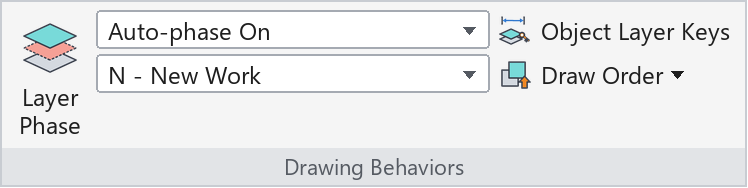
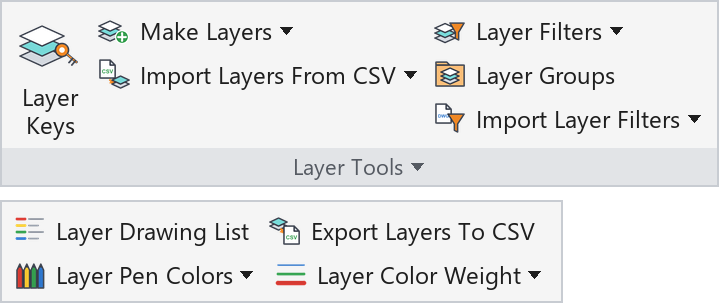
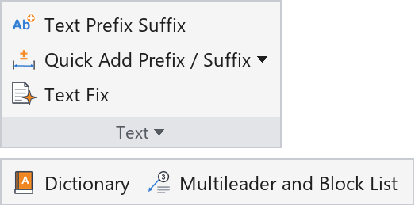
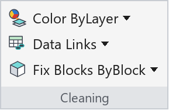
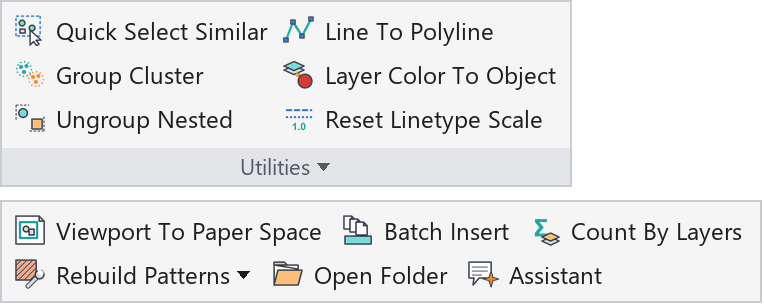
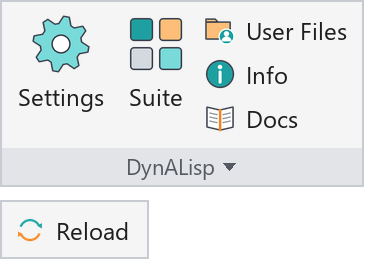

Ruban
| Fichier source | Resources\DynALisp.cuix (l'onglet) et Resources\DynALisp.Ribbon.dll (ses listes déroulantes) |
| Requis | AutoCAD pour Windows; les listes déroulantes demandent AutoCAD 2025 ou suivant |
| Licence | Licence publique générale GNU v3 |
Description
L'onglet DynALisp du ruban a un bouton pour chaque outil du module Dynalisp, avec son icône propre, dans un groupe de fonctions par groupe d'outils, et les commandes du noyau dans le groupe DynALisp. AutoCAD le charge avec DynALisp : il n'y a rien à configurer. Le ruban est en anglais, comme les fenêtres de DynALisp : cette page cite ses libellés tels qu'ils apparaissent.
Groupes de fonctions
L'onglet entier, puis chaque groupe de fonctions avec sa partie déroulante ouverte sous son titre. Les listes déroulantes montrent des valeurs d'exemple.

Draw

Quick Draw, Quick Shape, Quick Draw Manager, Hatch Presets, Shrinkwrap.
Drawing Behaviors

Layer Phase et ses listes déroulantes Auto-phase et Phase, Object Layer Keys, Draw Order.
Layer Transfer

Transfer et ses listes déroulantes Level, From et To, Manager.
Layer Tools

Layer Keys, Make Layers, Import Layers From CSV, Layer Filters, Layer Groups, Import Layer Filters. Dans la partie déroulante : Layer Drawing List, Export Layers To CSV, Layer Pen Colors, Layer Color Weight.
Text

Text Prefix Suffix, Quick Add Prefix / Suffix, Claude Text Fix. Dans la partie déroulante : Dictionary, Multileader and Block List.
Cleaning

Color ByLayer, Data Links, Fix Blocks ByBlock.
Navigate

Output

Prep Drawing. Dans la partie déroulante : Command Optimizer.
Setup

Set Units, Standard Grid, System Variables. Dans la partie déroulante : Set File Preferences.
Utilities

Quick Select Similar, Group Cluster, Ungroup Nested, Line To Polyline, Layer Color To Object, Reset Linetype Scale. Dans la partie déroulante : Viewport To Paper Space, Batch Insert, Count By Layers, Rebuild Patterns, Open Folder.
Troubleshooting

DynALisp

Settings, Suite, User Files, Info, Docs. Dans la partie déroulante : Reload.
Boutons
- La flèche d'un bouton liste les préréglages de son outil (les phases, les échelles de dessin, les unités...), sa commande principale en premier. Le bouton lance ensuite le dernier élément choisi, comme le bouton Cercle d'AutoCAD.
- La flèche du bouton Quick Draw liste All et les groupes des préréglages : la galerie s'ouvre sur le groupe choisi.
- Les outils moins utilisés sont dans la partie déroulante de leur groupe de fonctions : la flèche à côté de son titre.
- Un bouton dont l'outil agit sur les objets sélectionnés (Transfer) garde la sélection; les autres boutons annulent d'abord la commande en cours.
- Survolez un bouton pour voir sa description.
Listes déroulantes
Deux groupes de fonctions ont des listes déroulantes qui montrent le réglage du dessin, comme la liste déroulante Calque d'AutoCAD :
- Drawing Behaviors – l'auto-phase et la phase active du dessin courant (voir Layer Phase). Choisir un élément l'applique.
- Layer Transfer – le niveau (Level), la valeur d'origine (From) et la valeur visée (To) du transfert (voir Layer Transfer). Leurs listes suivent les calques du dessin. Choisir une valeur ne fait que la retenir : le bouton Transfer l'exécute. Les choix sont gardés pour la session.
Elles montrent toujours l'état courant, quoi qui l'ait changé (un alias, une fenêtre, un autre dessin devenu courant).
Notes
- Les listes déroulantes sont ajoutées par Resources\DynALisp.Ribbon.dll, qui demande AutoCAD 2025 ou suivant. Dans une version antérieure, l'onglet n'a que ses boutons : le bouton Layer Phase ouvre sa fenêtre, et le bouton Transfer demande le niveau et les valeurs.
- Un outil désactivé dans Dyl-Suite répond Unknown command quand on clique son bouton.
- Les listes déroulantes ne changent que quand AutoCAD est inactif, sans commande en cours : après une commande, elles peuvent prendre un moment à montrer le nouvel état.
- Un problème des listes déroulantes affiche à la ligne de commande une ligne qui commence par DynALisp ribbon:.
Construire le ruban
Pour qui modifie DynALisp : l'onglet est généré, jamais modifié dans l'éditeur CUI.
- Installer\Ribbon\BuildRibbon.py écrit DynALisp.cuix à partir de Installer\Ribbon\Ribbon.csv (les groupes de fonctions et les boutons), de RibbonIcons.py (les icônes) et de Resources\StartupSuite.csv (les noms, descriptions et commandes enfants). Il signale une commande principale absente du ruban ou sans icône. --sheet <fichier.png> dessine chaque icône sur le ruban clair et le ruban foncé.
- Les listes déroulantes se compilent avec dotnet build Installer\Ribbon\Plugin -c Release, AutoCAD fermé.
- La même exécution dessine les images de cette page à partir des mêmes groupes de fonctions et icônes (Installer\Ribbon\RibbonPanels.py, dans Docs\Plugins\Ribbon) et écrit sa section Groupes de fonctions, en anglais et en français : elles suivent le ruban, sans capture d'écran à faire. --pictures ne dessine qu'elles.
- Redémarrez AutoCAD pour voir le nouveau ruban.